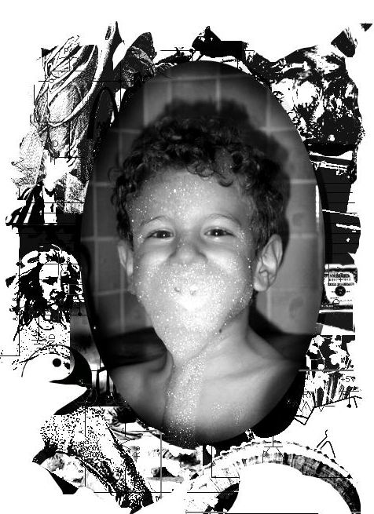

<div class="two spacing"></div>

<div class="row">
  <div class="medium-8 columns">
    {% capture my_include %}{% include about.md %}{% endcapture %}
    {{ my_include | markdownify }}
  </div>
  <div class="medium-4 columns">
    <div id="bio">
      <br>

      <div class='spacing'></div>
      <ul class='socials'>
        {% for social in site.socials_fa %}
        <li>
          <a href={{ social.url }}>
            <i class='fa fa-{{ social.icon }}'></i>
          </a>
        </li>
        {% endfor %}
        {% for social in site.socials_ai %}
        <li>
          <a href={{ social.url }}>
            <i class='ai ai-{{ social.icon }}'></i>
          </a>
        </li>
        {% endfor %}
      </ul>
      <div class='spacing'></div>
    </div>
  </div>
</div>

<div class="four spacing"></div>
